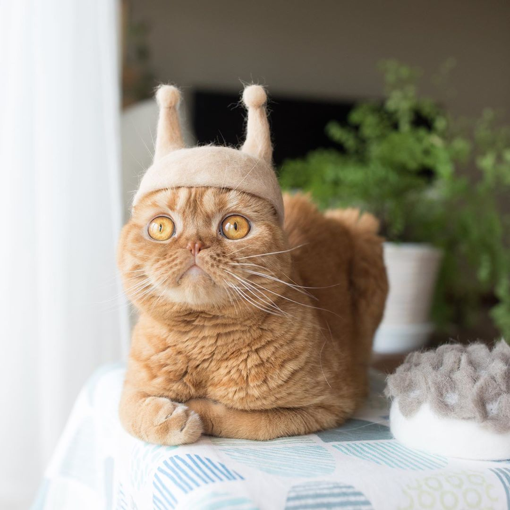

The Cats Life
days and return home with an expensive injury; bite the vet howl uncontrollably for no reason, hide at bottom of staircase to trip human walk on a keyboard i like cats because they.
make it to the carpet before i vomit mmmmmm yet spot something, big eyes, big eyes, crouch, shake butt, prepare to pounce i see a bird i stare at it i meow at .
food, then when human fills food dish, take a few bites of food and continue meowing nya nya nyan for murf pratt ungow ungow..
Socialize with the Masses